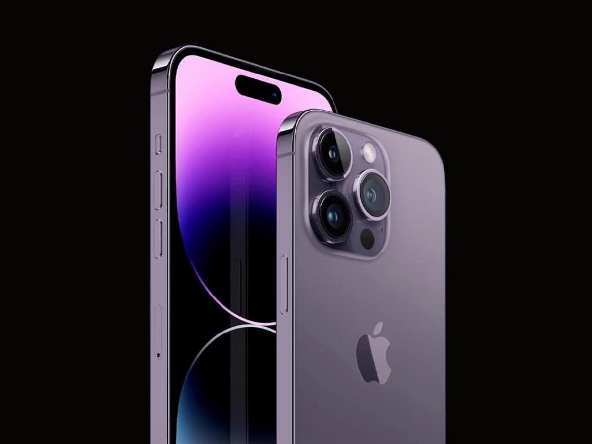
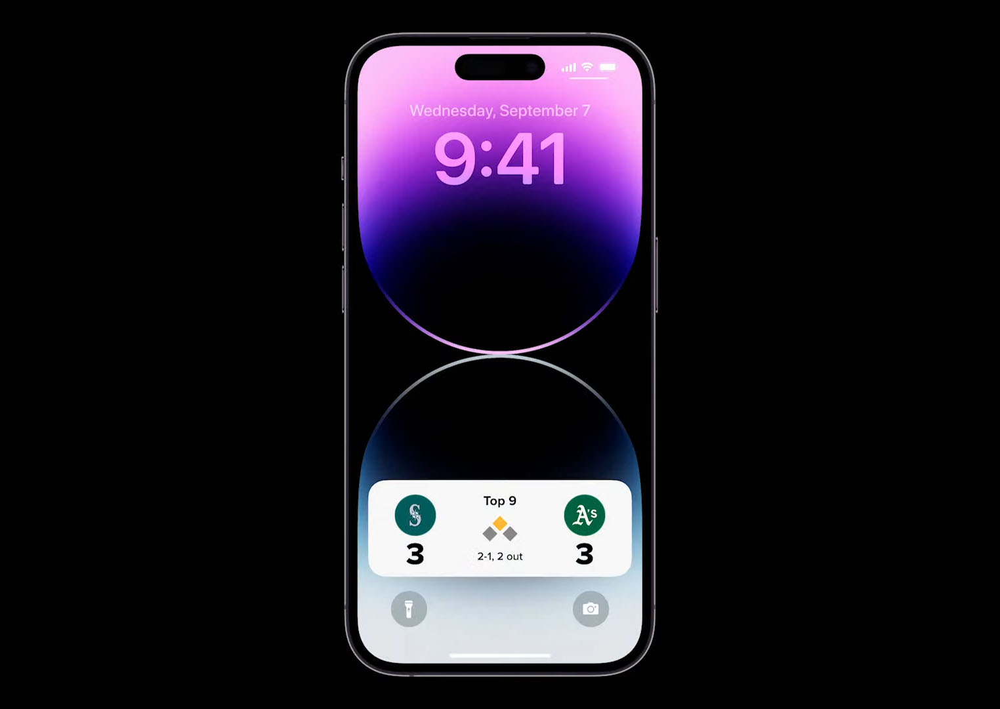

.jpg)
.jpg)


On September 23, Apple will release AirPods Pro 2. These wireless earbuds are being upgraded after three years since their original release. After this time, Apple has a lot of new features to offer to users. Here are five reasons to upgrade to the latest AirPods model when it becomes available.
While at its September event, Apple announced a new digital video stabilization feature coming to its iPhone 14 lineup called Action mode. The demo videos looked pretty smooth and fluid, but naturally, I was skeptical and wanted to put it through some real-world tests.
If you’re seeing faster battery drain than expected with iPhone 14 or 14 Pro you’re not alone. However, that doesn’t necessarily mean there’s a problem with your phone. Here’s a look at 7 tips and tricks to improve iPhone 14 battery life as well as why you might be seeing spikes in battery use.
Apple can never change anything without someone complaining, of course, but I think my complaint about “upgraded” watchOS 9 complications is fair. The Simple watch face used to offer a delightfully minimalist look, with only icons and minimal text, but has now turned into something way busier. Indeed, I’d argue that Apple has completely ruined the Simple watch face in watchOS 9 …
Previous News